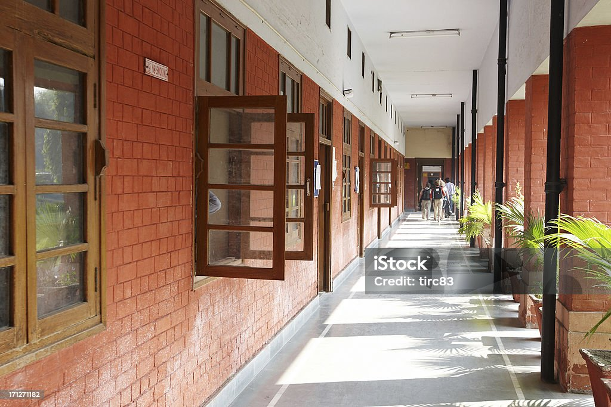

Home
Welcome to the Mechanical Department's official page. Our department is dedicated to excellence in teaching, research, and service.
Explore our programs and projects.
About
The Mechanical Department offers undergraduate, postgraduate, and doctoral programs. Our curriculum is designed to provide a strong foundation in mechanical engineering principles while also incorporating the latest advancements in technology.
We have state-of-the-art laboratories and facilities to support our students and faculty in their academic and research endeavors.
Faculty
Our faculty members are highly qualified and experienced professionals who are committed to imparting quality education and conducting pioneering research.
Research
Our department is involved in various cutting-edge research projects in the fields of robotics, thermal engineering, fluid mechanics, and materials science. We encourage our students to participate in research activities to enhance their learning experience.

Contact
Contact us at www.mechanicaldepartment.com
Address: Mechanical Department, Ballelaka Campus, Tirunelveli, Tamil Nadu